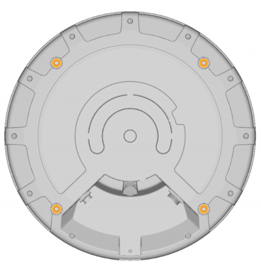

Using the Q35 Locator
In this section you will find useful information about installing the Q35 as well as connecting the device to a power supply and a network.
Quuppa’s recommendation is to align all Locator LEDs in the same direction. For example, install all Locators so that their LEDs face one of the cardinal points.
Installation
The Q35 should be mounted clear of any metal obstructions (e.g. air-conditioning ducts, large ceiling trusses, building superstructures) to the side or front of the device. In case needed, use a rigid conduit to lower the Q35 away from these obstructions.
Installation Using VESA Mount
Selecting Compatible Mounting Bracket
The Q35’s mounting holes are arranged according to VESA MIS-F, 200, Y, 6 standard (Four M6 threaded holes in 200x200mm pattern). Select your mounting bracket according to the requirements set by the installation environment. Please note that some mounting bracket models may prevent access to cable ports when installed. Make sure that the mounting bracket can carry the weight of Quuppa Q35 (1,3 kg) and possible wind loads.
Installing the Device

- Connect the Ethernet cable (and Micro USB cable if used) to the
Locator. The Ethernet port of the device is USB Firewire RR-125300-03-ZX
(i.e. GTContact GT125300-03-Z3), make sure to verify the compatibility of
your cabling before proceeding with the installation. As the Q35 can be used
with either shielded or unshielded Ethernet (e.g. Cat5e/6), you can choose
the type of cable that best suits your deployment environment. For example,
for demanding environments (e.g. industrial or outdoor), we recommend that
you select shielded cables for better protection against electromagnetic
interference (EMI) and electrostatic discharges. Note: If you are installing the device in an outdoor environment (or an indoor environment with high levels of moisture or dust), use cables and connectors designed for outdoor use to protect the device from water, moisture and dust. In such cases, to ensure that the installation is really waterproof, we recommend that you:
- Use ready made cables, where the waterproof connector has been attached by the cable manufacturer. For example, USB Firewire RR-125320-02-XX (i.e. GTContact GT125320-0X-xx). If ready made cables are not available, you can also use a compatible connector housing part over the RJ45 connector. For example, USB Firewire RR-125360-00 or USB Firewire RR-125330-00).
- Make sure that the cable connector is securely fastened, according to the manufacturer's instructions.
- Do not remove the protective cap from the USB port unless you are using the USB port to power the Locator, in which case, make sure to also use a waterproof USB cable connector. The USB port of the Q35 is USBFirewire RR-11A200-0P-XX and it accepts USBFirewire RR-11B220-05-XX series waterproof USB cables.
- If waterproof RJ45 Field Installable Connectors are used, ensure that the Ethernet cable is between 5-8.5mm thick. Also ensure that it is not possible for water to run between the connector and the cable.
For more information regarding compatible connectors and cables, please contact the Quuppa Support team at support@quuppa.com.
- Check the cables using an Ethernet cable tester and ensure that all of the connectors are securely fastened. Avoid any sharp turns, bends or pulling on the cable when routing it to the PoE switch. You can also use the device's indicator light to troubleshoot connectivity issues. For more information, please see the Connect to Network section below.
- Attach the Q35 to the mounting bracket with four bolts (shown in the picture
below). Use M6 bolts and assembly torque of 2 Nm (maximum allowed torque is
2.5 Nm).
With a thin bracket, an M6 bolts of 10 mm length can be used. With thicker brackets, please check the suitable bolt length (maximum length of the bolt to be used is 10mm + thickness of the used VESA mount). It is very important to use the right size bolts so as not to break the device.

- Attach the VESA mounting bracket to the wall, ceiling, or mast.Warning: Always make sure that the installation surface or mast can carry the weight of the equipment and possible wind loads before installation.
- Aim the Q35 towards the intended coverage area and tighten all fasteners.
- Make sure the other end of the Ethernet cable is connected to a device that is connected to the Quuppa system.
Installation Tips
-
When installed outside, install the device tilted to allow rainwater to run off the device.

-
Carry out a test installation before ordering all of the installation parts for a larger project.
-
Please check the local authorities’ safety requirements and if necessary, use a safety wire to ensure a safe installation.
-
If the Q35 needs to be tilted to achieve the intended coverage area, make sure to mount the device so that the required mechanical tilt can be achieved.
Connect to Power Supply
Option 1: Use Power over Ethernet (PoE)
The Q35 supports the use of standard IEEE 802.3at Type 1 PoE components, e.g. PoE switch or power injector, as its power source. Only use standard certified PoE devices. When using PoE, a separate DC power supply is not required.
Option 2: Use Separate 5V DC Micro USB
If you are not using PoE components, connect the Q35 to a 5V power supply with a Micro USB. Only use compatible power supplies. Contact Quuppa in case of any uncertainty regarding compatible power supplies.
When the power supply is connected, the Q35 automatically switches on. The red indicator light blinks multiple times, after which the red indicator light remains on statically until the Q35 is connected to the QPE.
Connect to Network
Connect the Q35 to a network with an Ethernet cable using the RJ-45 Ethernet socket. For your safety and to prevent any damage to the device, only connect the Q35 to standard certified network components.
When the Q35 is properly connected to the network, but not activated by the QPE software, the red indicator light blinks slowly. The blue indicator light blinks or is statically lit when the Q35 is activated by the QPE software. If needed, it is possible to turn the Locator’s indicator light LED off when in tracking mode. For more information, please see separate instruction.
Indicator Light Table
The table below shows the different Locator modes as indicated by the Locator's indicator light.
| Colour Sequence | Sequence Description | Indicator Light Mode |
|---|---|---|
 |
Blink red - green - blue once | Reboot sequence |
 |
Static red | Locator powered, no IP address |
| Long red blink followed by a yellow blink | Locator powered, level indicator warning triggered | |
 |
Blinking red | Locator connected to network |
| Blinking red - yellow | Locator connected to network, level indicator warning triggered | |
 |
Blinking blue | Locator in deployment mode |
 |
Blinking blue - yellow |
Locator in deployment mode, level indicator warning triggered |
| Static blue | Locator in tracking mode | |
| Long blue blink followed by a yellow blink | Locator in tracking mode, level indicator warning triggered | |
 |
Blinking white | Locator firmware upgrade in progress |
 |
Blink red twice, pause and repeat | Locator subscription not valid |
| Off | Optional indicator light state for tracking mode |